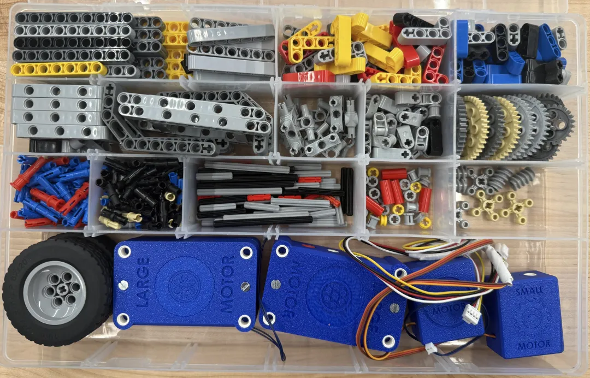

The Kit
Hardware that invites building. Organization that keeps flow.
The PROTO kit is modular and designed to stay tidy. It supports fast builds for beginners and deeper projects for students ready to push mechanisms, motion, and code.
What’s inside
Core components + modular parts that support repeatable classroom workflows.

Mechanisms
Beams, connectors, gearing — built for iteration.
Beams, connectors, gearing, and structure to teach force, motion, and design constraints.